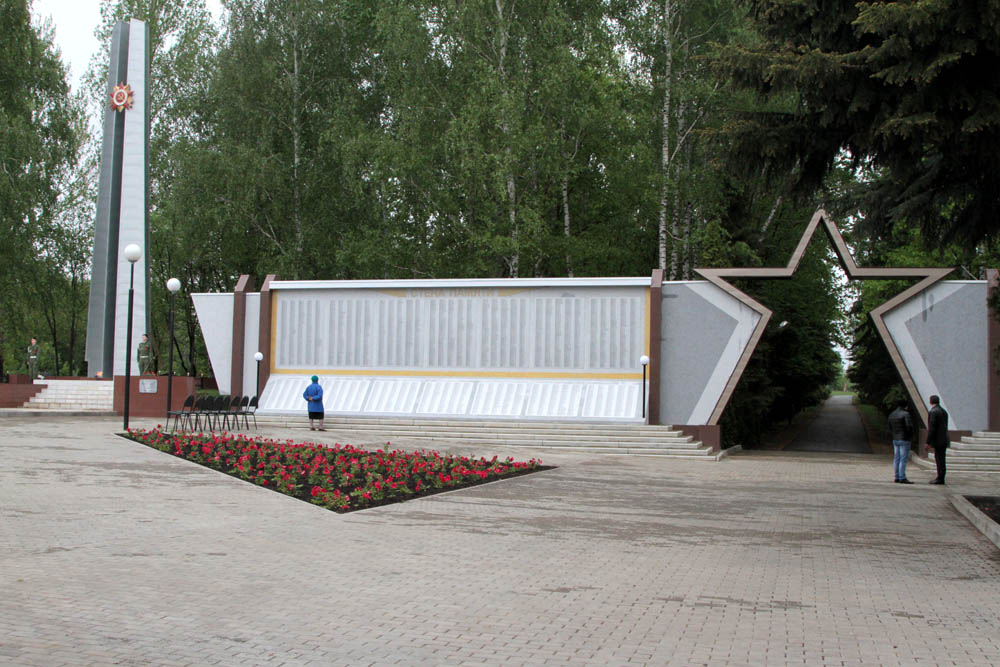

Места нашей области, посвящённые Великой Победе
 Домой
Домой
Стена Памяти (Волово)
На двух больших плитах, соединённых пятиконечной звездой, высечены имена 8034 воловцев - участников Великой Отечественной войны. Здесь имена тех, кто вернулся с войны, погиб на войне, пропал без вести.
Местные жители проделали колоссальную работу - собирали имена и фамилии героев-земляков целый год с одной лишь целью – увековечить их для потомков. Вообще на войну из Воловского района ушло 8300 человек. Для оставшихся неизвестными 266 солдат на «Стене Памяти» оставили пустое место. Их фамилии высекут на камне после того, как они станут известны в ходе поисковых работ.
Изображения:
